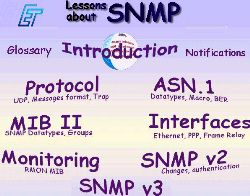
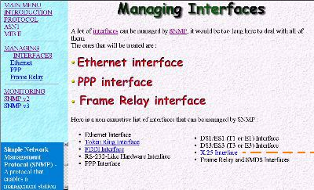

The tutorial contains some Java applets.
It's better to use :
| Communicator ( Netscape 4.0 ) by Netscape |

|
| Explorer 4.0 by Microsoft |
|
System informations and preferences
| Communicator ( Netscape 4.0 ) by Netscape |
|
| Explorer 4.0 by Microsoft |
|
Help
The principle is very simple :
Main menu
|
More
about
ET
and
Enic
Glossary
Titles of
|
 |
Notifications, you are in there ! |
All the part are like this :
|
Summary window
Glossary
|
 |
Title of the subpart
Main screen A link to the Glossary |
Just click on the alphabet letter in the window to see
explanations of the words in the glossary :
About the authors
This tutorial has been made by two students from
Enic
(Ecole Nouvelle d'Ingenieurs en Communication) during a training period
at
Politechnika Poznanska
(Poznan
University of Technology),
ET
(Elektroniki
i Telekommunikacji Instytut) Department:
| Maxime DELCROIX | delcroix@elv.enic.fr | Student in fourth year at the Enic |
| Olivier LUMETTA | lumetta@elv.enic.fr | Student in fourth year at the Enic |
| Mr Janusz KLEBAN | jkleban@et.put.poznan.pl | Doctor at Poznan University of Technology |
| Mr Pierre VINCENT | vincent@enic.fr | Enic Internationnal Coordinator. |
References
You can find other informations about SNMP in the following sites :